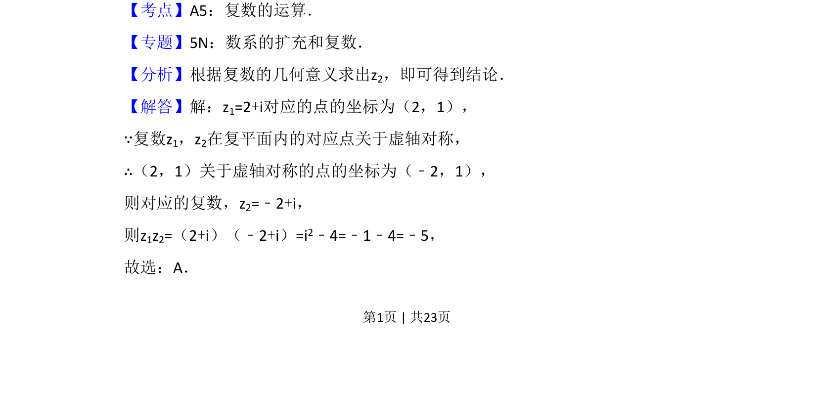
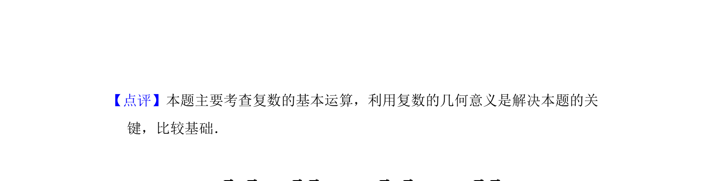

考点：复数的几何意义 复数运算
复数几何意义及乘法运算，利用对称性求复数乘积


📄 原 PDF 第 1 页：
素材/真题/吉林/2008-2024·（吉林）数学高考真题/2014年高考数学试卷（理）（新课标Ⅱ）（解析卷）.pdf
2．（5分）设复数z1，z2在复平面内的对应点关于虚轴对称，z1=2+i，则z1z2=（ ） A．﹣5 B．5 C．﹣4+i D．﹣4﹣i
【考点】A5：复数的运算．菁优网版权所有 【专题】5N：数系的扩充和复数． 【分析】根据复数的几何意义求出z2，即可得到结论． 【解答】解：z1=2+i对应的点的坐标为（2，1）， ∵复数z1，z2在复平面内的对应点关于虚轴对称， ∴（2，1）关于虚轴对称的点的坐标为（﹣2，1）， 则对应的复数，z2=﹣2+i， 则z1z2=（2+i）（﹣2+i）=i2﹣4=﹣1﹣4=﹣5， 故选：A．